ギャラリー
本資料中で生成した画像と、その生成コードへのリンクを一覧にする。NumPy・Pillow・matplotlib がインストールされた環境であれば、各画像の生成コードは python examples/<ファイル名> として直接実行できる。
基礎編
詳しい解説は基礎編：ジェネラティブアート特有の設計方針を参照。

代表的なイージング関数のグラフ。examples/easing.py の render_easing_curves 関数。

同じ 2 色の間をイージング関数ごとに補間したグラデーション。examples/easing.py の render_eased_gradient 関数。

半径を等間隔に取った同心円。examples/easing.py の render_eased_rings 関数。

半径を ease-in で決めた同心円。examples/easing.py の render_eased_rings 関数。

ライフゲームの世代の進行を書き出したアニメーション GIF。examples/animation.py の life_frames 関数。

リサージュ曲線の位相を動かしたループアニメーション GIF。examples/animation.py の lissajous_loop_frames 関数。
色彩設計
詳しい解説は色彩設計を参照。

HSB の色相オフセットから機械的に生成した 4 種類の配色パターン。examples/palette.py

同じ色相のまま PCCS の 12 トーン（彩度・明度の組み合わせ）を変化させたトーンオントーン配色。examples/palette.py

トーンを 1 つに固定し、色相だけを変化させたトーンイントーン配色。examples/palette.py

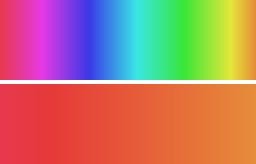
色相環を単純に線形補間した場合と、短い弧を通るように補間した場合のグラデーション比較。examples/palette.py

既存の生成画像（ジュリア集合）から Image.quantize で抽出した配色パレット。examples/palette.py

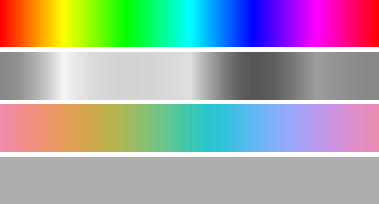
HSB と OKLCH で色相を 1 周させた帯と、それぞれの知覚的な明るさの比較。examples/oklab.py の oklch_to_srgb 関数。

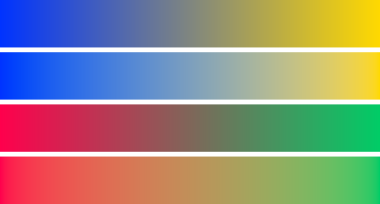
同じ 2 色の間を sRGB と OKLab で補間したグラデーションの比較。examples/oklab.py の mix_oklab 関数。

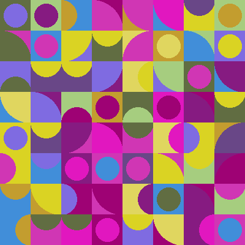
RGB の一様乱数で選んだ色で塗った模様。examples/color_pattern.py

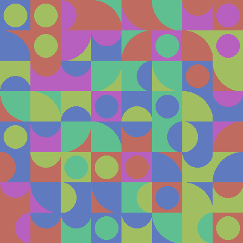
同じ模様をトーンイントーンの配色で塗ったもの。examples/color_pattern.py

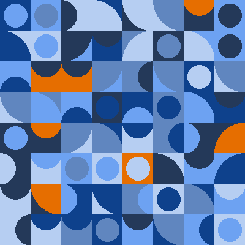
同じ模様を、青のトーンオントーンと橙の差し色で塗ったもの。examples/color_pattern.py の render_pattern 関数。
タイリングパターン
詳しい解説はタイリングパターンを参照。

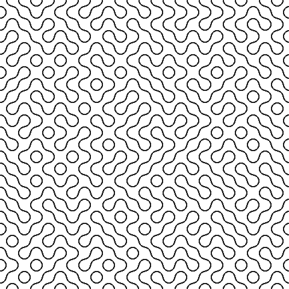
弧タイルをランダムな向きで敷き詰めたトルシェ・タイル。examples/truchet.py

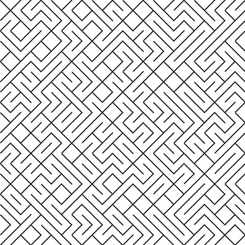
タイルの中身を対角線に変えたパターン。examples/truchet.py の draw_diagonal_tile 関数。

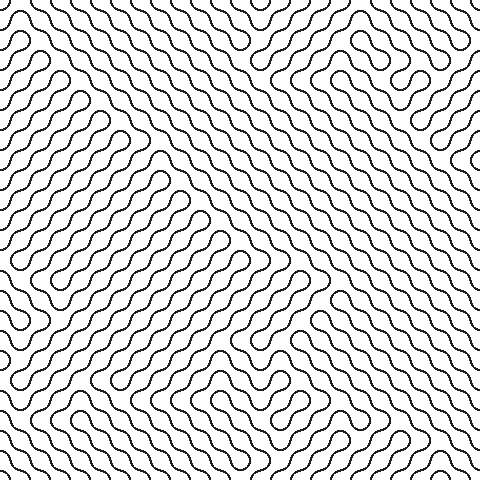
タイルの向きをパーリンノイズの符号で決めた、流れるような模様。examples/truchet.py の render_noise_tiling 関数。

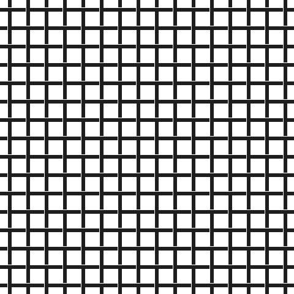
市松模様で上下を切り替えた編み込みパターン。examples/truchet.py の draw_weave_tile 関数。

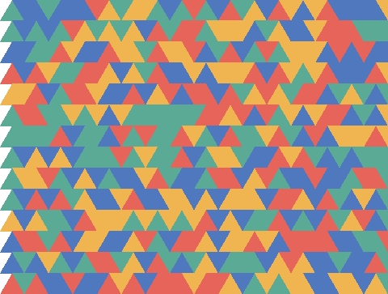
正三角形格子のモザイク。examples/polygon_tiling.py

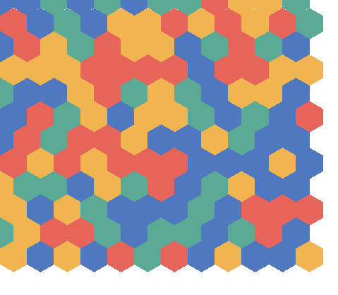
正六角形格子のモザイク。examples/polygon_tiling.py

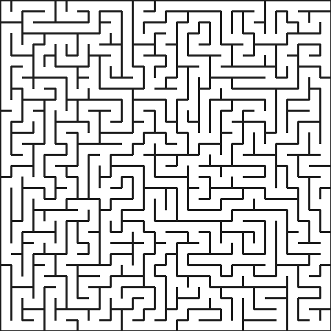
再帰的バックトラッキング法で生成した迷路。examples/maze.py

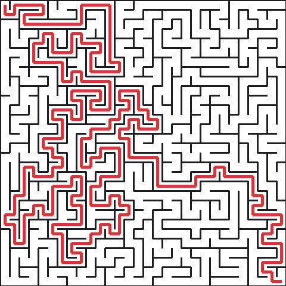
幅優先探索で求めた迷路の唯一の経路。examples/maze.py の solve_maze 関数。

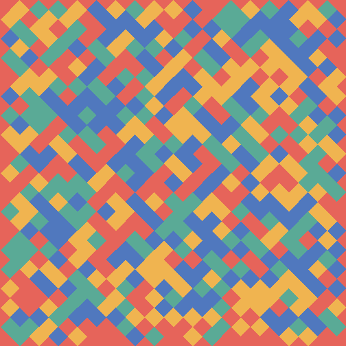
辺の制約を満たすように配置したワン・タイル。examples/wang_tiles.py

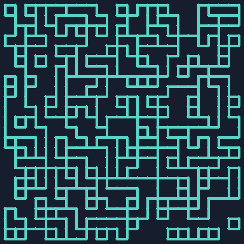
全てのタイルを同じ重みで選び、Wave Function Collapse で配置した配管。examples/wfc.py の wave_function_collapse 関数。

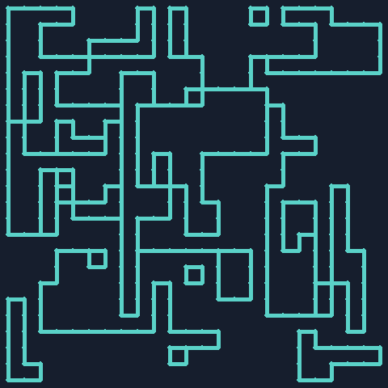
空白と直線のタイルを選びやすくして配置した配管。examples/wfc.py

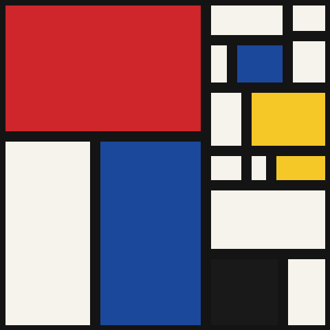
矩形の再帰的分割によるモンドリアン風の構成。examples/subdivision.py の split_rect 関数。

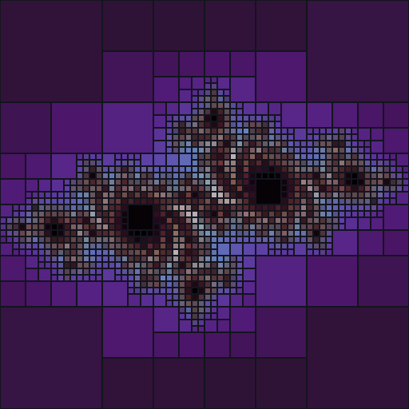
ジュリア集合の画像を四分木で分割したモザイク。examples/subdivision.py の quadtree 関数。

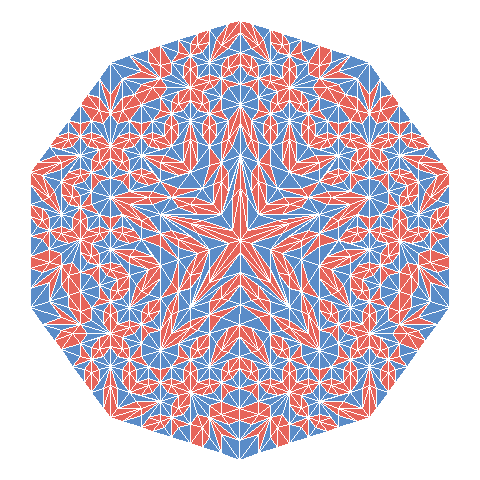
Robinson 三角形の細分割で構成した非周期のペンローズ・タイリング。examples/penrose.py

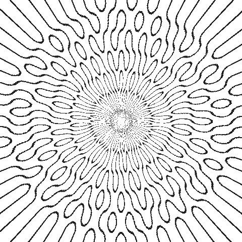
トルシェ・タイルの帯を極座標に読み替えた放射状パターン。examples/polar_remap.py

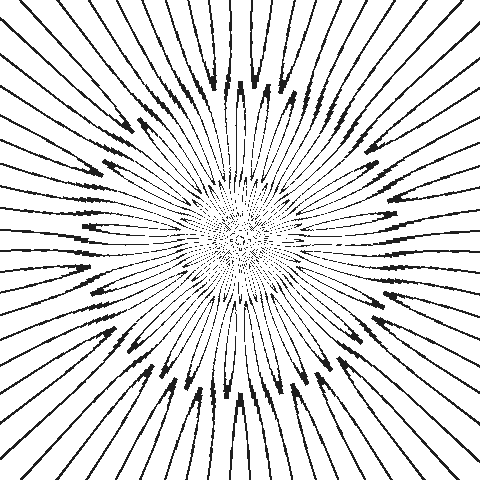
同じ帯を対数極座標に読み替えた画像。examples/polar_remap.py

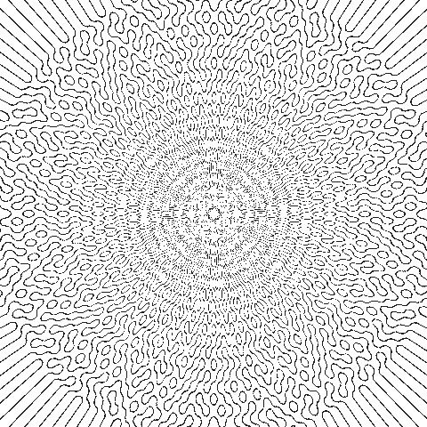
角度を 8 分割して回転方向に繰り返した模様。examples/symmetry.py

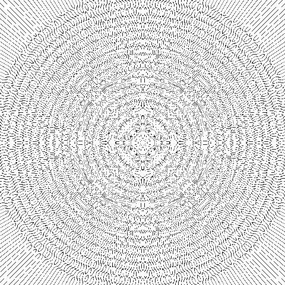
扇形の中点で鏡映してつないだ万華鏡模様。examples/symmetry.py の kaleidoscope_remap 関数（mirror=True）。

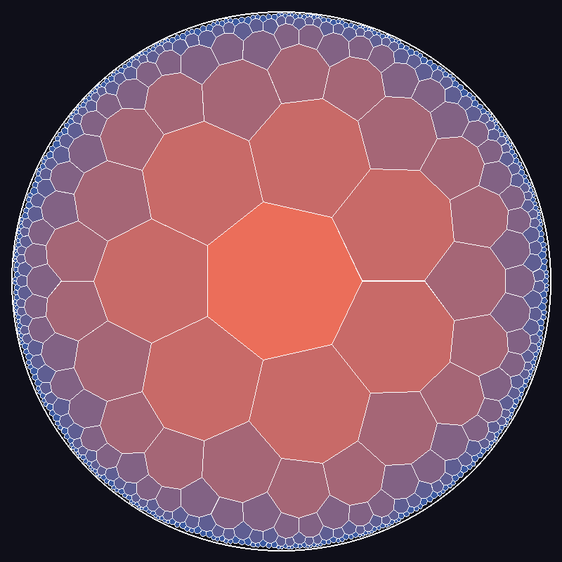
ポアンカレディスク模型による {7,3} 双曲タイリング。examples/hyperbolic_tiling.py

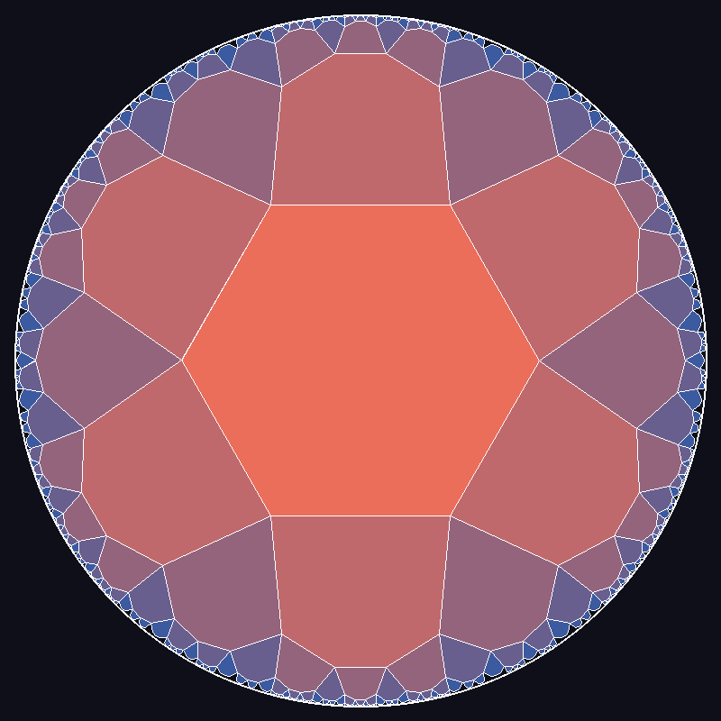
同じ仕組みで {6,4} に変えた双曲タイリング。examples/hyperbolic_tiling.py
螺旋と曲線
詳しい解説は螺旋と曲線を参照。

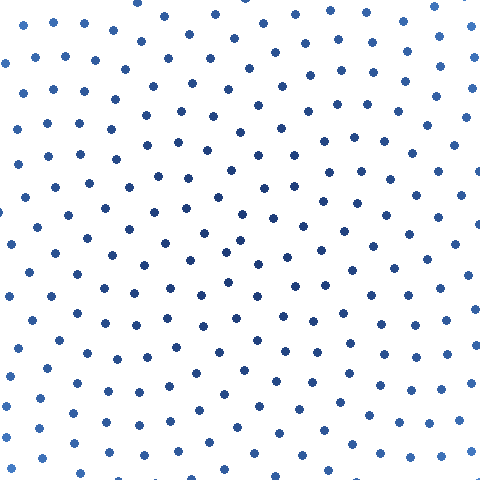
黄金角によるフィロタキシス配置。examples/phyllotaxis.py

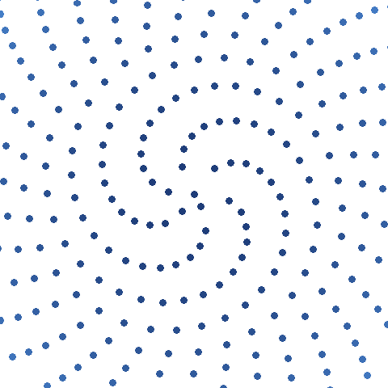
白銀比による回転角のフィロタキシス。渦状の腕が見える。examples/phyllotaxis.py

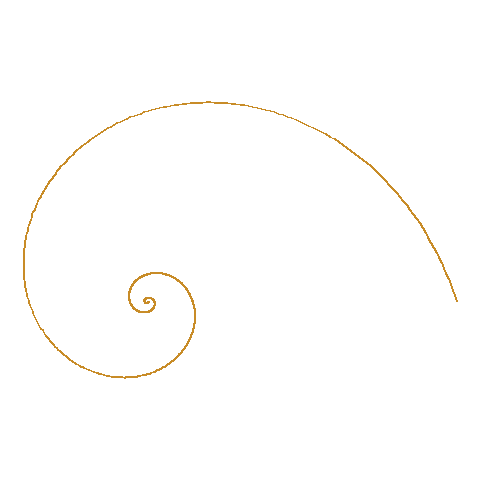
黄金比を成長率とした対数螺旋（黄金螺旋）。examples/polar_curves.py

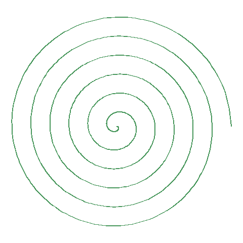
腕の間隔が一定なアルキメデスの螺旋。examples/polar_curves.py の archimedean_spiral_points 関数。

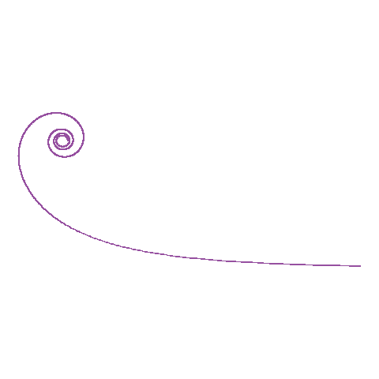
外側で直線に近づいていく双曲螺旋。examples/polar_curves.py の hyperbolic_spiral_points 関数。

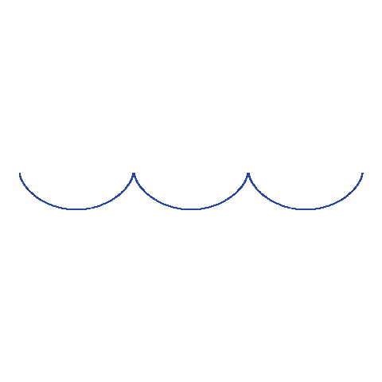
直線上を転がる円の軌跡、サイクロイド。examples/spirograph.py

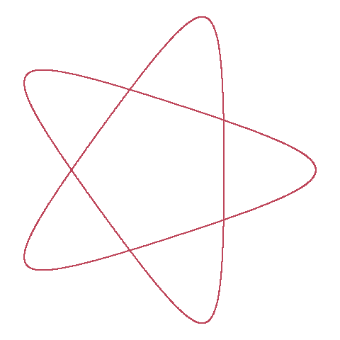
固定円の内側を転がる円によるハイポトロコイド。examples/spirograph.py

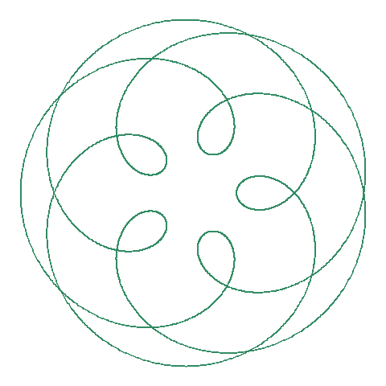
固定円の外側を転がる円によるエピトロコイド。examples/spirograph.py

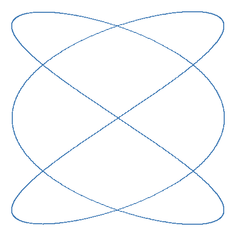
周波数比 3:2 のリサージュ曲線。examples/lissajous.py

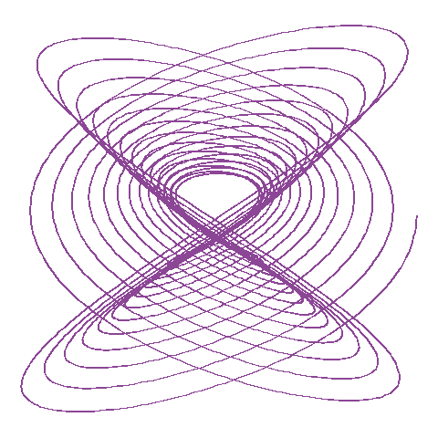
振幅を減衰させたハーモノグラフの軌跡。examples/lissajous.py の harmonograph_points 関数。

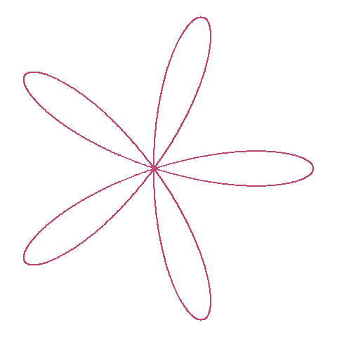
k=5 のバラ曲線（5 枚花びら）。examples/polar_curves.py の rose_curve_points 関数。

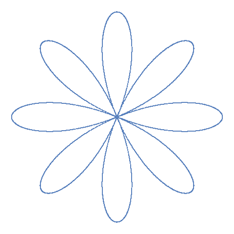
k=4 のバラ曲線（8 枚花びら）。examples/polar_curves.py の rose_curve_points 関数。

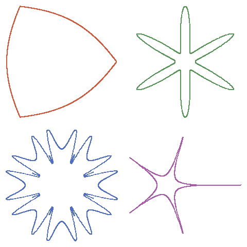
スーパーフォーミュラのパラメータ違いによる 4 種類の輪郭。examples/polar_curves.py の superformula_points 関数。

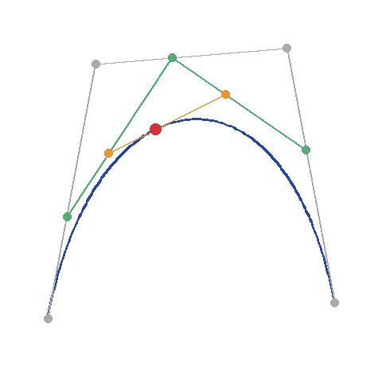
3 次ベジェ曲線と de Casteljau のアルゴリズムの作図。examples/bezier.py の render_construction 関数。

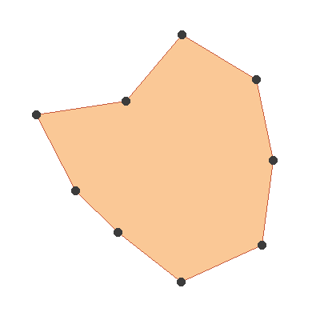
ランダムな 9 点を直線で結んだ多角形。examples/bezier.py の render_blob 関数。

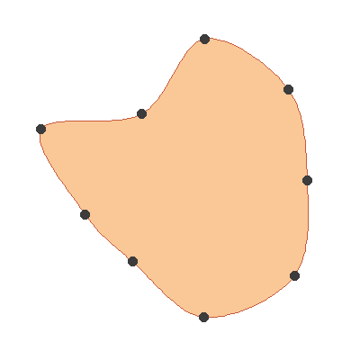
同じ 9 点を Catmull-Rom スプラインで結んだブロブ。examples/bezier.py の render_blob 関数。

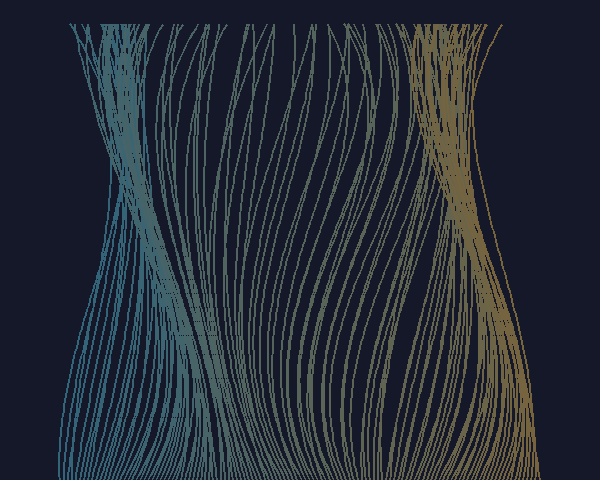
3 次ベジェ曲線を重ねた、波打つ線の束。examples/bezier.py の render_strands 関数。
ノイズ
詳しい解説はノイズを使った表現を参照。

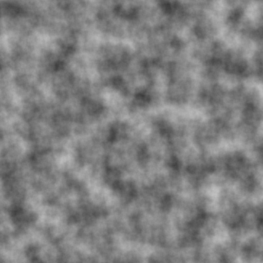
fBm（複数オクターブを重ねたパーリンノイズ）。examples/perlin_noise.py の fbm2d 関数。

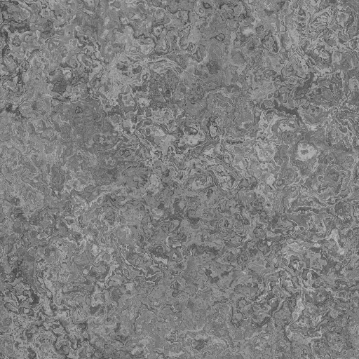
ドメインワーピングによる大理石調の渦模様。examples/perlin_noise.py の domain_warp2d 関数。

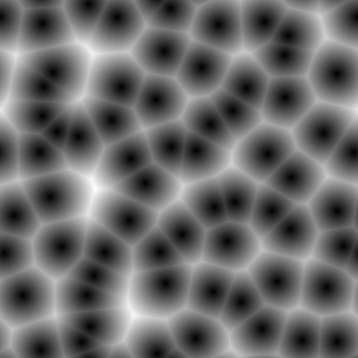
Worley ノイズの \(F_1\)。examples/worley.py の worley2d 関数。

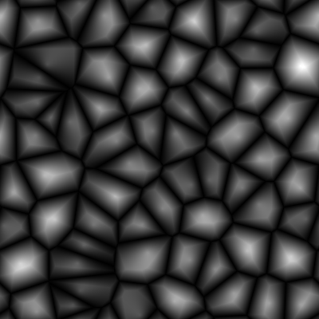
Worley ノイズの \(F_2 - F_1\) による網目模様。examples/worley.py

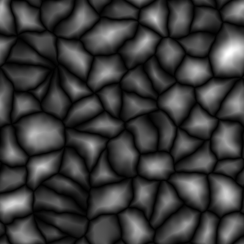
ドメインワーピングと組み合わせた Worley ノイズ。examples/worley.py

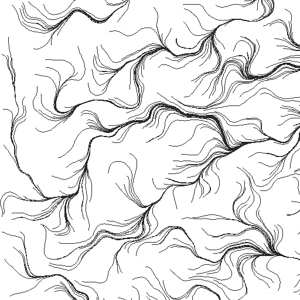
ノイズから作ったフローフィールドに沿って流れるパーティクルの軌跡。examples/flow_field.py
距離関数
詳しい解説は距離関数による形状表現を参照。

円と矩形を単純な union(min) で合成した図形。examples/sdf.py の union 関数。

同じ円と矩形を smooth_union でなだらかに合成した図形。examples/sdf.py の smooth_union 関数。

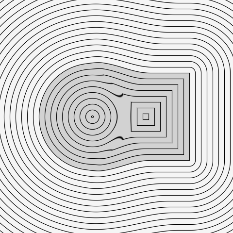
距離場を等高線として可視化した画像。examples/sdf.py の render_isolines 関数。

座標をノイズで歪めてから円の SDF を評価した、有機的なブロブ形状。examples/sdf.py

距離関数の和集合で空き距離を求めながら円を詰めた円充填。examples/circle_packing.py の pack_circles 関数。

図形の距離関数で内側と外側を分けて円を詰めた画像。examples/circle_packing.py

一様乱数で配置した点群。粒の密集と隙間が目立つ。examples/poisson_disk.py

ポアソン円盤サンプリングで配置した同数の点群。examples/poisson_disk.py の poisson_disk_sampling 関数。

種点ごとにランダムな色で塗り分けたボロノイ図。examples/voronoi.py

同じボロノイ図の境界線だけを描いた配線図。examples/voronoi.py

同じ種点から求めたドロネー三角形分割。examples/voronoi.py

種点をポアソン円盤サンプリングに差し替えたボロノイ図。領域の大きさがそろう。examples/poisson_disk.py

マンハッタン距離によるボロノイ図。examples/voronoi.py の minkowski_distance 関数。

同じ種点をユークリッド距離で塗り分けたボロノイ図。examples/voronoi.py

同じ種点をチェビシェフ距離で塗り分けたボロノイ図。examples/voronoi.py

一様乱数で置いた種点によるボロノイ図。examples/lloyd.py

ロイド緩和を 30 回適用したボロノイ図。examples/lloyd.py の lloyd_relaxation 関数。
フラクタル
詳しい解説はフラクタルを参照。

L-system の書き換え規則から生成した樹木状の分岐構造。examples/l_system.py

同じ L-system の仕組みで規則だけを変えて生成したコッホ雪片。examples/l_system.py

同じ L-system の仕組みで生成したペンローズタイル。examples/l_system.py

脱出時間アルゴリズムで描画したマンデルブロ集合。examples/mandelbrot.py

同じ漸化式で \(c\) を固定し、初期値側を画素座標にしたジュリア集合。examples/mandelbrot.py

カオスゲーム（IFS）で描いたバーンズリーのシダ。examples/ifs.py

同じくカオスゲームで描いたシェルピンスキーの三角形。examples/ifs.py

単一の非線形写像を反復する Clifford attractor。examples/attractors.py

同じ形式の De Jong attractor。パラメータだけで模様が大きく変わる。examples/attractors.py

補助関数を介した Gumowski-Mira map。examples/attractors.py
セルオートマトンと反応拡散系
詳しい解説はセルオートマトンと反応拡散系を参照。

ルール 30 による 1 次元セルオートマトンの時空間図。examples/automata.py

ルール 90 による 1 次元セルオートマトン。シェルピンスキーの三角形と同じ模様になる。examples/automata.py

ライフゲームの軌跡を減衰させながら重ね合わせた可視化。examples/automata.py

Gray-Scott モデルによるサンゴ状（迷路状）のパターン。examples/reaction_diffusion.py

同じ Gray-Scott モデルで、パラメータ違いによる水玉状のパターン。examples/reaction_diffusion.py

同じくパラメータ違いによるミミズ状のパターン。examples/reaction_diffusion.py
パーティクルシステム
詳しい解説はパーティクルシステムを参照。

分離・整列・結合の 3 ルールによる群れ行動（Boids）。examples/boids.py

格子による近傍探索で求めた、近い点どうしを線で結んだ網目。examples/neighbor_search.py の grid_pairs 関数。

重力・粒子間反発・床との衝突を組み込んだパーティクルの軌跡。examples/particle.py

Verlet 積分と距離拘束による、懸垂線状に垂れたロープ。examples/particle.py の simulate_rope 関数。

同じ拘束を格子状に適用した、上端だけを固定したクロス。examples/particle.py の simulate_cloth 関数。
進化的アルゴリズム
詳しい解説は進化的アルゴリズムを参照。

半透明三角形で近似する目標画像。examples/evolution.py の make_target 関数。

世代が進むにつれて目標画像に近づいていく様子。examples/evolution.py の evolve 関数。

6000 世代の (1+1) 進化戦略を経た最終結果。examples/evolution.py
画像を素材にした生成技法
詳しい解説は画像を素材にした生成技法を参照。

パーリンノイズの画像に適用したハーフトーン（網点）表現。examples/image_effects.py の halftone 関数。

Floyd-Steinberg 法で白黒 2 階調に減色した誤差拡散ディザリング。examples/image_effects.py の floyd_steinberg_dither 関数。

重み付きボロノイ図による点描。examples/stippling.py
サンゴ状のパターンに適用したピクセルソート。examples/image_effects.py の pixel_sort 関数。